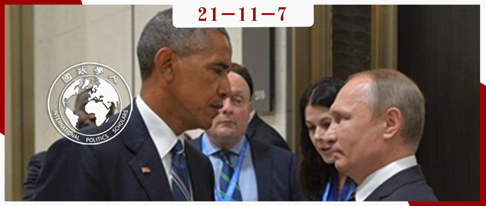

收录于合集 #《国际关系前沿》2021年第11期 18个

作品简介
作者： Seanon S. Wong，香港中文大学政治与行政学系助理教授。美国南加州大学政治学和国际关系博士，曾取得南京大学- 约翰斯·霍普金斯大学中美文化研究中心的证书，以及芝加哥大学国际关系学硕士学位和政治学学士学位。他的研究兴趣包括国际关系理论、外交学、政治心理学、身份和群体间冲突以及东亚国际关系。
编译： 戎秦婴（国政学人编译员，辽宁大学国际政治专业）
来源： Seanon S. Wong(2016), Emotions and the communication of intentions in face-to-face diplomacy. European Journal of International Relations , Vol 22, Issue 1, 2016, page(s): 144-167, https://doi.org/10.1177/1354066115581059
归档： 《国际关系前沿》2021年第11期，总第38期。

内容摘要
各国往往寻求通过谈判解决争端。然而，外交官在面对面会谈时既有透露自己偏好而寻求合作的动机，也有歪曲偏好而进行竞争的动机。那么他们该如何表达和评估彼此的意图？在现有相关的理论中，如结构现实主义、理性主义和交往行为理论（theory of communicative action）提供的解释不够充分。为寻求进一步突破，本文强调了情感的交流功能，借用了社会和实验心理学中关于谈判的最新研究成果。本文认为，外交官在进行谈判时，不仅应注意他人所说的话，也应关注情感暗示。一个人对词语的选择、语调、手势和身体姿势都包含情感信息，反映了一个人如何评估当下的情况。外交作为国家间的沟通渠道而言是独特的，因为它可以交换外交官个人层面的意图，进而延伸为他们所代表的政府的意图。如果通过其他非个人或不规则的渠道进行沟通，则可能导致这些意图减弱、消失或扭曲。为论证该观点，本文讨论了法绍达危机、七月危机（1914）、古巴导弹危机和美国—叙利亚关于中东问题的谈判。
文章导读
01
引言
在主权问题、军备控制、贸易和军事/安全危机等方面，各国往往寻求通过谈判解决争端。为达成协议，领导人及其外交代表需要明确他们的意图。然而，为了达成更好的协议，在避免撒谎的前提下，外交官并不会直率地表达谈判目标，因此他们经常发现自己陷入所谓“谈判者困境”，即同时存在通过透露偏好与他人共同创造价值的激励，又有通过歪曲偏好并以牺牲他人利益为代价来索取更多利益的激励。这种混合的动机意味着很难从表面看出谈判者的真实偏好。
面对面谈判的外交官必须能够表达意图并评估彼此意图，对于如何做到这一点，本文强调了情感的交流功能，借用社会和实验心理学中关于谈判的最新研究成果，认为在谈判中的外交官不仅应注意到对方说的话，也应关注其情感暗示，如用词选择、语调、手势和身体姿势等。外交作为国家间的沟通渠道而言是独特的，因为它可以交换外交官个人层面的意图，进而延伸为他们所代表的政府的意图。如果通过其他非个人或不规则的渠道进行沟通，则可能导致这些意图减弱、消失或扭曲。
本文的贡献在两方面。首先国际关系学界忽视了对外交的研究，“对于外交是什么，外交官做什么以及他们应该做什么都不感兴趣”（Wiseman, 2011: 710）。本文则采用了“跨学科”的方法来阐述外交在国际政治中的作用，“寻求超越国际关系/政治科学的视野”（Melissen, 2011: 724）。第二，关于国际关系中情感作用的新研究。本文展示了情感在面对面外交的“微观层次”是如何起作用的。现有研究大多关注将情感概念化为群体、群体间或系统现象，又或是以个人为分析单位，但对于情感在人际交往中的作用研究甚少。
随后本文回顾了结构现实主义、理性主义和交往行为理论对面对面外交的解释以及这些理论的局限性，并在第二部分引入心理学中情感的社会功能视角以突破其局限性。其次对外交中伪装或隐藏情感的动机会使沟通失灵的问题，本文在三、四部分中引入杰维斯（1970）的理论加以解释。最后本文论点需要两个条件支撑，第一是社会和实验心理学的研究成果，如情感评价理论（the appraisal theory of emotions），认为情感是客观的信息，观察者可据此判断表达者对某一情况的评价，当然也会考虑特定话语背景下的某些规则。第二，本文提供的经验证据确有一定局限性，对于闭门会谈等形式的外交无从知晓，故本文目的更在于鼓励相关领域的进一步研究。
02
国际关系理论如何解释外交
首先是结构现实主义的观点，认为在国际无政府状态下没有最高权威追究外交官的责任，这意味着他们可能表达不实意图且不用承担责任，而他人也无法知晓其意图的真实性。他们所说的话难以被轻易核实，所以外交官不太可能相互信任，任何与他们沟通的尝试都只能被当作耳旁风（Mearsheimer, 2011）。但矛盾的是，现实中外交官在谈判时很少撒谎或者虚张声势，误传之所以罕见，并不是因为外交官诚实，而是因为他们不希望其他人因为足够信任他们而上当。外交官之间所说的话很可能是真实的，但又是不证自明的，几乎不可能传达任何人们不知道或难以核实的东西。
其次，认同理性选择理论的学者认为，即使在这种不确定情况下，行为者仍愿意承担风险，接受信息丰富的信号，并按照贝叶斯逻辑更新对彼此的信念（Rathbun, 2007）。同样，部分理性主义者也认为，外交是可靠的沟通渠道，并以观众成本理论（audience costs）论证其合理性。
最后是交往行为理论。根据哈贝马斯的著作，行为者进行交流时不仅遵循理性主义者强调的“结果主义逻辑（logic of consequentialism）”，还遵循“辩论逻辑（logic of arguing）”。即争论是基于主观间构成的理性（an intersubjectively constituted rationality），目的是为了集体利益而达成共识。因此，交流与其说是为个人利益的最大化而讨价还价，不如说是通过共同语言的媒介说服他人接受更好的论点。但争论和说服都是情感化的行为，而交往行为理论忽视了情感在沟通中的作用。
03
情感如何在外交中传达意图
在心理学中，情感长期以来被认为是个体现象，而近年有学者对这种观点提出质疑，认为情感是他者导向的、有意识的交往行为，并组织社会互动 (Morris and Keltner, 2000: 13)。然而情感是如何从表达者传递给观察者的呢？对此，心理学家提出所谓“情感评估理论”。根据该理论，一个事件使个体产生的某种情感，是通过个体对事件的评估，沿着与他的目标和信念相关的无数认知维度进行调节的，即情感能够还原表达者的潜在意图和认知过程。
在谈判中，情感不仅为谈判者提供了什么是可以接受或不可接受的信息，还可看出彼此表现的情感是哪种“类型”。如表现出愤怒的情感更可能使谈判者认为当前是竞争的社会情景。情感也以可预测的方式传达意图，在反复的交流中通过观察彼此情感，可能会发现对于一方来说的高优先问题是另一方的次优先问题，双方便可在自己最关心的问题上获取最大利益。即“准确识别特定的情感表达模式，可有助于谈判者修正固定认知，达成双赢协议”（Pietroni et al., 2008）。
有反对观点认为在实际谈判中，对外交官来说，误判意图的后果是很严重的，因此他们倾向于低估不确定的信息，怀疑对方的善意，并伪装成某种情感而使其沟通功能失效。认为“外交沟通无用”观点的学者，通常会列举法绍达危机等涉及军事或安全问题的高风险外交场景来论证其观点。
但实际并非如此，在1898年法绍达危机期间，英法会谈中，英国大使艾德蒙·蒙森（Edmund Monson）注意到法国外交部长德尔卡塞（Delcassé）说，“我会牺牲物质利益，但在我手中，国家荣誉将不会损失”，蒙森注意到了这句话背后的现实，在送回伦敦的报告中认为“法国绝不是虚张声势”(Brown, 1970)。这与社会功能理论的观点一致，情感在德尔卡塞表达意图，以及蒙森评估其主张的过程中发挥了重要作用。事实上，两国政府在危机期间一直进行谈判，这冲击了现实主义（Layne, 1994）和理性主义（Fearon, 1994；Schultz, 2001）对该危机的解释。同样，在1914年俄国与德国谈判中，“愤怒”的情感也使谈判者感受到战争的威胁。
这些事件均表明：通过定期、个人间的互动，外交官能够相当准确的判断对手的意图。现实与理论假设相同，即外交官均倾向于将情感作为某种信息。
04
情感指标
首先，情感的表现在某种程度上超出了行为体的意识控制，在人际关系层面，许多行为被视为一种指标，因为它在本质上是非计划和未经考虑的（Jervis, 1970）。与心情不同，情感是对特定的外部刺激和环境所表现出的固有生物反应。从理性的角度来看，行为体在某些情况下可能更愿意控制自己的情感和外在表现，因为不这样做可能会影响当前回报。然而，从长远来看，情感表达有利于社会参与（Frank, 1988）。个体表现情感的可预测性和可信度越高，就越有助于沟通和协调。只要情感的真实表达没有被完全抑制，它就是具有信息性的。
现有研究表明，基于情感表达的物理属性，根据表现出的微表情，谎言可以在极短的时间中被检测出来（Ekman, 2003）。此外心理学家认为有些人对于情感更加敏感，善于辨别情感，并利用该信息指导他们在谈判中的行动。故“阅读”他人心理的能力，即通过对方表现出的微表情知晓其内心想法，已成为外交官的一项重要技能。国际关系学者已开始研究某些人之所以成为外交官是否因为他们具有某些特质，如耐心和战略思考能力等（Hafner- Burton et al., 2014），使他们易于与他人在情感上建立联系。此外，在一系列实验中发现，行为体若表现出真诚的情感，将提升在信任博弈和囚徒困境博弈中的合作率 （Côté et al., 2013）。总之，虚假的情感对个人的可信度是弊大于利。
05
情感信号
根据杰维斯（Jervis, 1970）的定义，信号是“通过行为者之间的默契或明确理解而确定其意义的陈述或行动”，这意味着，即使情感是完全可操纵和无法验证的，但如果处在特殊的社会环境中，情感表达仍有意义。在外交行为中就有三个特征支持情感信号传导的有效性。
首先，外交官在面对面交流时会多少保持一定的诚意。虽然现实主义对外交中“诚信”的观点，在理论上是正确的（即认为在谈判中会使用一些技巧、虚张声势和心理战），但在实际谈判中，欺骗对一个人信誉的损害是不可逆的。“谈判者会认为，他的一生都将从事外交事务，因此会努力树立诚实公平的名声（De Callières, 1963）。”故外交官更愿意在外交互动中有所作为，如交换情感信号。
其次，情感通常被认为是最优外交实践的诅咒。美国国务院曾规定了外交官必备的一些人格特征，最重要的就是“保持冷静和自我控制”。然而有时违反这些规则反而也会带来有益的回报，正如杰维斯所说，当一个信号被给予多数的行为者时，或是它被反复地给予一个行为者时，信号就会减弱（1970: 107）。事实上长期的冷静表现，会增强情感信号影响力。詹姆斯·贝克（James Baker）与叙利亚总统哈菲兹·阿萨德（Hafez Assad）就中东和平会议问题举行的会谈就是很好的例子。在1991年两人第五次会谈中，贝克得知阿萨德计划在两个原则问题上背弃约定，他的情感与前四次表现出的镇定大相径庭，给强硬的对手留下深刻印象，贝克明白不应“贬低”有效情感信号的作用。
最后，情感信号的强度不仅取决于系统中“噪音”的数量，还取决于外交官们习惯于接收的“二元”层面的信号。实验表明，长期持续情感的突然转变（如快乐到生气）会易于使对方做出更大让步，且使受试者更易相信这种转变是他们在谈判中的行为导致的。外交中的人际关系很少会如同白板一般，会谈者通过了解对方先前经历而相互熟悉。谈判者会将对方表现出的情感与其过去经历进行差异性和一致性比较。一向以冷静著称的外交官传递的愤怒信息会形成更强烈的信号（Brown, 1970）相反，由一向愤怒的情感转向焦虑时，会表达出期望达成协定的严肃信号（Morris and Keltner, 2000），如古巴导弹危机的解决。
06
未来研究展望
本文首先阐释了在既有国际关系领域中对面对面外交研究的忽视，本文为寻求突破，借用了社会和实验心理学关于谈判的最新研究成果，强调情感的沟通功能。外交使领导人能够表达和评估彼此的意图，是管理国际关系的基础。其次，情感对于参与行为与合作至关重要。当然本文仅是对开拓更广泛研究领域的初步尝试。
一方面，过去国关对于面对面外交的忽视可能是方法论层面导致的，另一方面，外交研究的资料主要来自外交工作者的主要记录，如回忆录、会议记录等，然而这些记录可能无法传达身体语言、手势和语气的微妙交流。
鉴于情感是难以捉摸的，因此可以借鉴心理学中随机实验室实验的使用。且在实验中可以通过相关群体样本进行进一步实验和实验设计中的不同操作来增强实验环境的外部有效性和现实性（Hudson and Butler, 2010；McDermott, 2011）。
进一步研究可以关注情感的沟通功能与国关学者传统研究领域是如何相互作用的。如谈判者通过愤怒来表达决心在多大程度上弥补了他在相对力量上的弱势，谈判者的不同身份和信任水平的影响作用，又或是情感在多边外交中的作用。
最后，通常认为外交官对情感具有较高的敏感性。无论这种主张是否成立，都值得进一步研究，因为它表明，外交的价值部分取决于执行者的情商。因此，一个潜在的研究方向是对外交官样本进行情商测试（Mayer et al.2003），并与其他人群已公布的标准进行结果比较。
译者评述
本文首先提出了在当前国际关系领域中对于面对面外交的研究不够充分，大多观点认为面对面外交对于解决国际问题的作用较弱，如现实主义观点就认为在会谈中充满着欺骗与不信任，导致在谈判时并不会取得实质性进展。
与传统观点不同，本文认为面对面外交能够发挥一定的作用，借用社会和实验心理学的最新研究成果，着重强调情感在谈判中所起的重要作用，并以外交谈判实例加以证明。具体内容包括，面对面外交是国家间沟通交流的重要渠道；谎言与欺骗在现实的外交行为中很少出现；情感可以传递信号，且在某些条件下表现出的特殊情感会传递信息更丰富、更具影响力的信号；经验丰富的外交官或许更易于从会谈者所出表现的情感中得出准确的信号等。
当然本文只是初步将国际关系研究与心理学等其他学科相结合进行跨学科的研究，仍有许多议题等待进一步研究，如情感的神经科学研究就为本文所提到的面对面外交提供了微观的心理学基础。此外，可以进一步重新探讨传统的情感类型对于国际关系的适应性功能。
总之，本文对于面对面外交的研究属于国际政治心理学研究中的中观与微观层面，着重关注领导人或外交官的认知和情感因素，以及外交信号的表达和可信性分析，完善了外交行为实质的研究。
参考文献
1. 尹继武:《冷战后国际政治心理学的研究进展：一项理论评析》，载《社会科学》,2021年第10期，3-14页。
词汇整理
法绍达危机 Fashoda Crisis
观众成本 audience costs
贝叶斯逻辑 Bayesian logic
交往行为理论 the theory of communicative action
方法论的 methodological
责编 | 李月云 黄慧彬
排版 | 何婕 陈炜昊
文章观点不代表本平台观点，本平台评译分享的文章均出于专业学习之用, 不以任何盈利为目的，内容主要呈现对原文的介绍，原文内容请通过各高校购买的数据库自行下载。

国政学人
支持学术公益与知识传播
微信扫一扫赞赏作者 __赞赏
已喜欢，对作者说句悄悄话
取消 __
发送给作者
发送
最多40字，当前共字
上一页 1/3 下一页
长按二维码向我转账
支持学术公益与知识传播
受苹果公司新规定影响，微信 iOS 版的赞赏功能被关闭，可通过二维码转账支持公众号。